The complete process
From a living palm
to a book of Dhamma.
Preparing the material takes the longest. Every later stage depends on the leaf becoming smooth, flexible and strong enough to hold a fine incision without breaking.
History of Ola leaf books
Memory given
a material form.
Before teachings were written, they lived in memory—recited, repeated and passed from one generation of monks to the next.
Buddhism reached Sri Lanka in the third century BCE. According to Sri Lankan Buddhist tradition, during a period of famine and conflict in the first century BCE, monks gathered at Alu Vihara in Matale and committed the Pāli Canon to writing.
Ola leaves became a durable home not only for Buddhist scriptures, but also for medicine, astronomy, poetry and records of everyday knowledge. Old manuscripts remain in temples, libraries and family collections today.
Sahampathi’s work belongs to this history, but it is a living practice rather than a museum reenactment. New texts are still prepared, inscribed and bound in his Matale workshop.
Preparing the leaf
Nine steps before
the first word.
Collecting palm leaves during a short season each year, when the leaves are at their best and the dry weather allows them to be properly prepared and preserved. Outside this period, the leaves may be unsuitable or the rains make processing difficult.
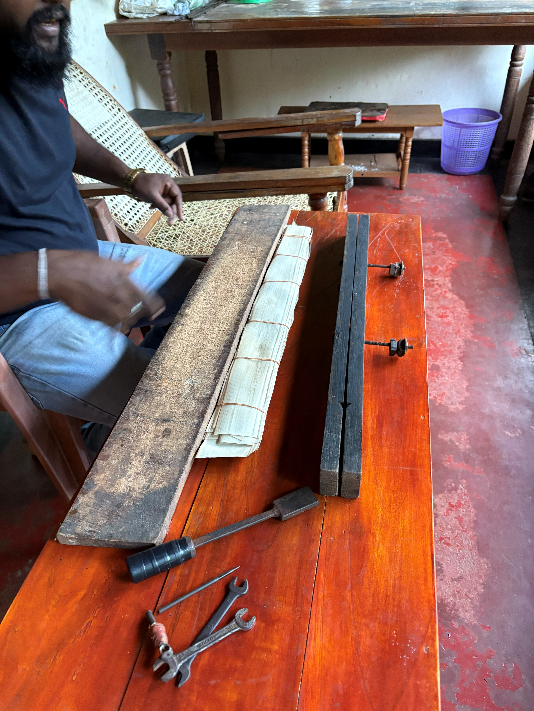
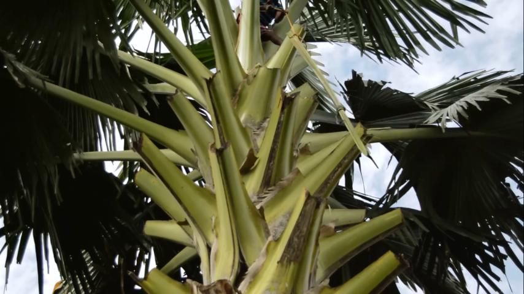
Cut the palm bud
The unopened bud is selected and cut before its leaves spread.
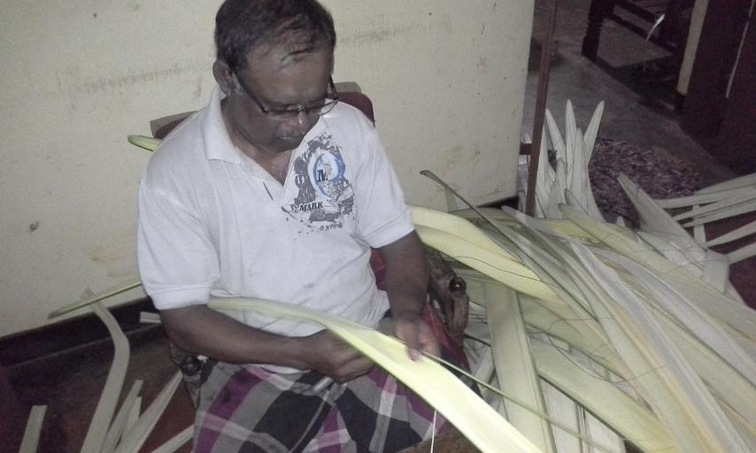
Remove the ribs
The stiff sticks or ribs are removed, leaving the material that will become writing leaves.

Boil naturally
The leaves are boiled with natural Ayurvedic oils and plant leaves.
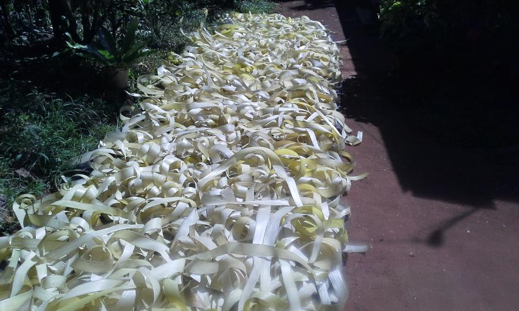
Dry, moisten, dry
They dry in sunlight for seven days, are moistened, then returned to the sun.
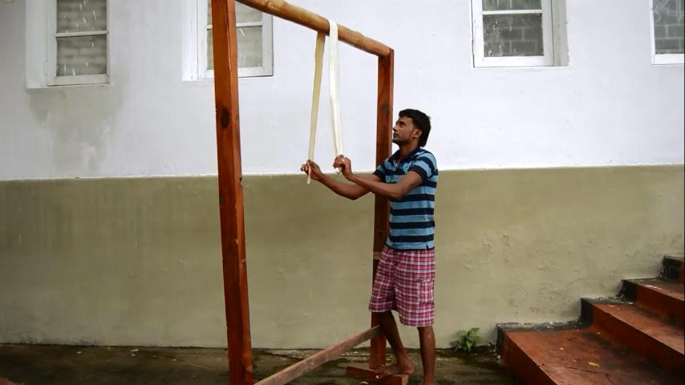
Iron with wood
Each leaf is pulled between wooden surfaces on both sides to flatten and smooth it.

Dry again
The flattened leaves receive a final period of normal sunlight.
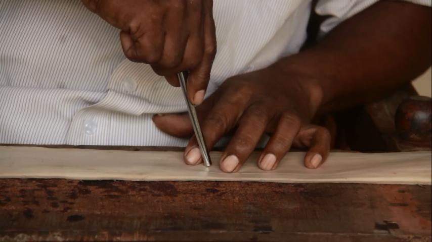
Drill the holes
Holes are drilled where thread will later gather the finished leaves.
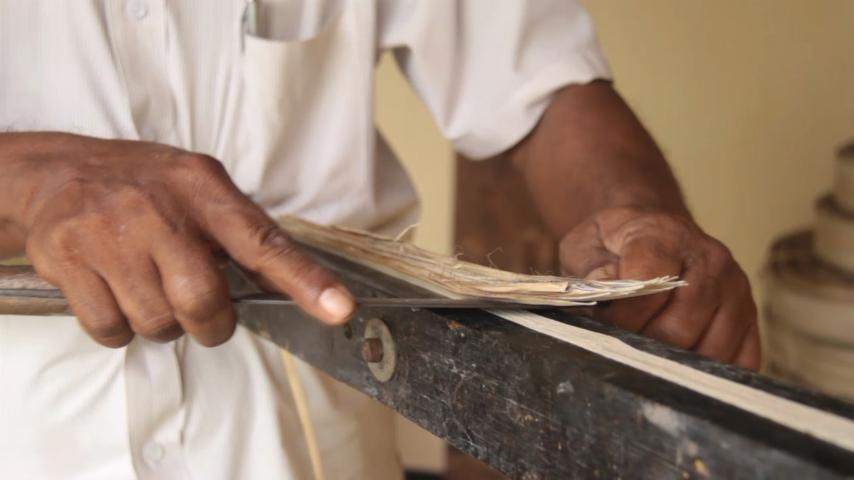
Cut to size
A wooden block guides the cutting so the leaves share a consistent shape.
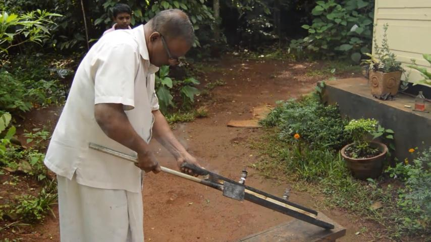
Burn the border
A controlled dark border is burned around the edge to finish the prepared leaf.

Writing
A groove,
not an ink mark.
Sahampathi writes with a bronze panhinda. Its pointed steel end scratches each character into the prepared leaf. Fresh writing is pale and becomes clearly visible only after the inking stage.
He writes Pāli in Roman transliteration and Sinhala script, and also works with Sinhala-language texts. Common commissions include the Dhammacakkappavattana Sutta, Ratana Sutta, Mangala Sutta and other paritta texts.
Too little pressure leaves no lasting groove. Too much pressure breaks the leaf.
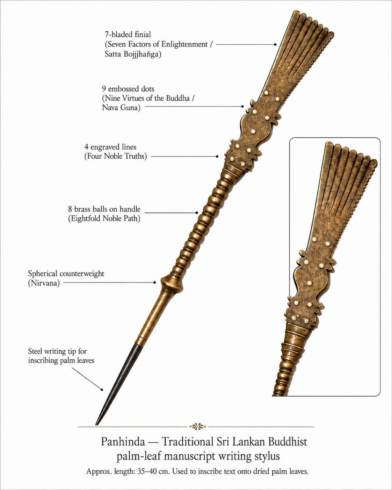
The story within the instrument
The teaching is present
before writing begins.
The decorated handle is not ornament alone. Its numbers and forms make the panhinda a compact map of Buddhist teaching.
- Seven bladesSeven Factors of Enlightenment
- Nine dotsNine Virtues of the Buddha
- Four linesFour Noble Truths
- Eight spheresNoble Eightfold Path
- CounterweightNirvana
- Steel pointInscribes the prepared leaf
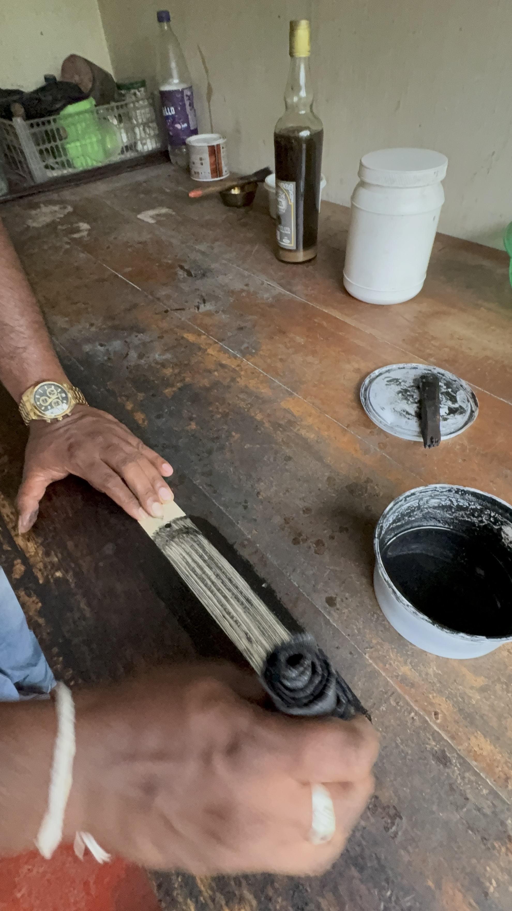

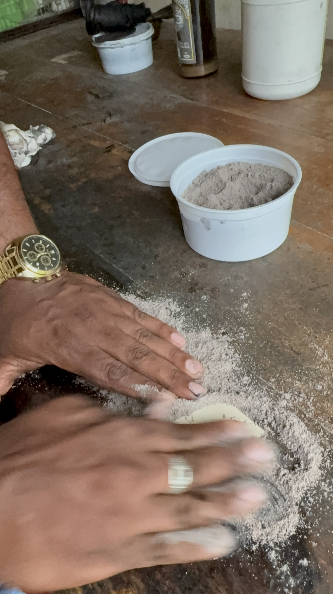
Black inking
Making the invisible
visible.
Freshly incised letters are difficult to see. A dark mixture is worked across the leaf so it settles into every groove. The surface is then cleaned and polished with a fine powder, leaving the script legible against the warm leaf.
Unlike writing with liquid ink, this stage fills incisions that already exist and then clears the surrounding surface.
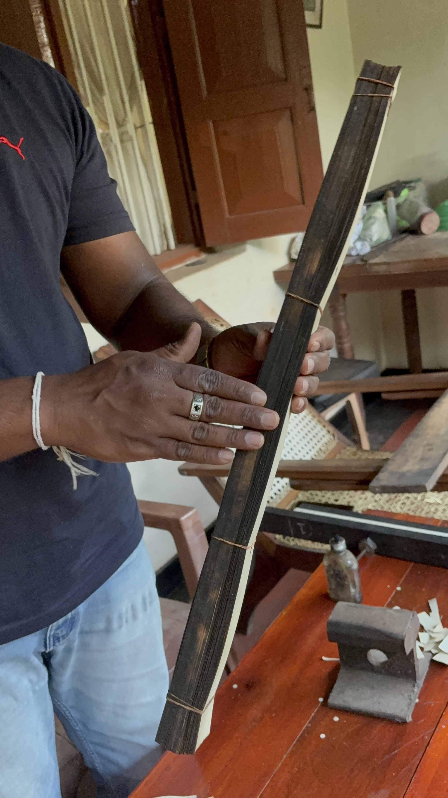
Bookbinding & finishing
Separate leaves become
one book.
Each leaf is aligned and gathered through its prepared holes. Most books are bound with cotton string; special books may use pins. The completed stack is protected by wood or silver covers.
Books vary with the length of the selected sutta. Once prepared leaves are available, a book of fewer than twenty pages usually takes a few days to complete.
Sahampathi’s care guidance
Dry hands.
Dry air.
Regular care.
Store the book away from humidity and do not open it in a humid environment.
Make sure your hands are clean and completely dry before touching the leaves.
Loosen the string before opening, then spread the leaves carefully instead of forcing the bound stack.
Sahampathi advises airing and sun-drying a newly completed book once a month during its first two years.